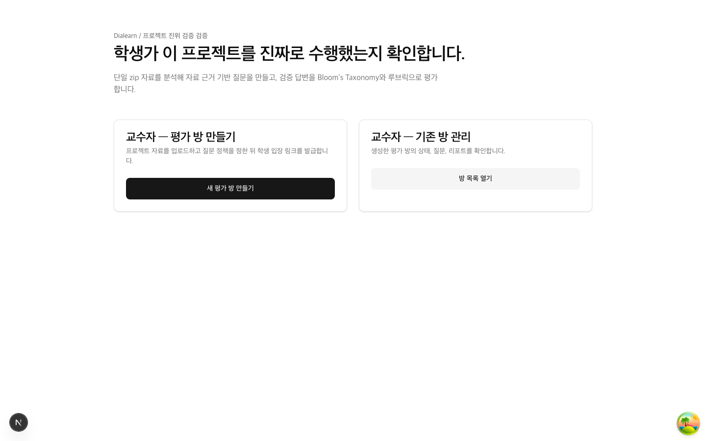
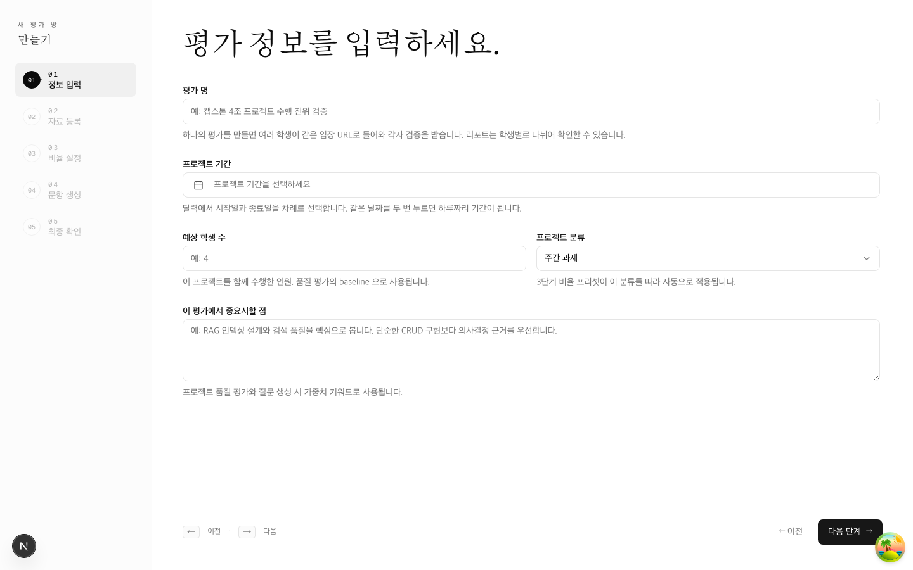
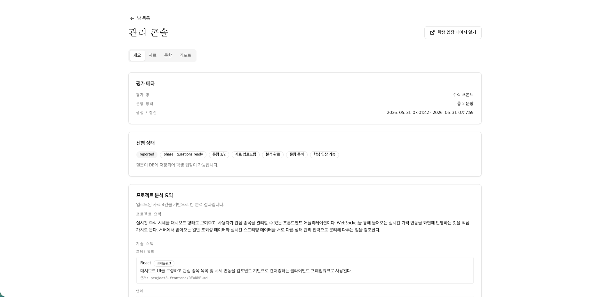
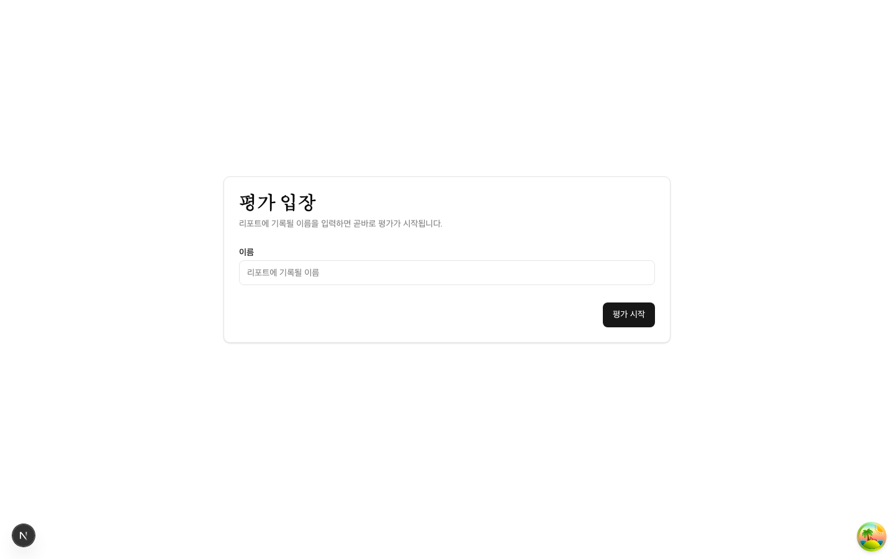

AI 기반 프로젝트 수행 진위 검증 서비스
프로젝트 기반 학습(PBL)이 확산되면서, 학생이 제출한 프로젝트를 본인이 실제로 수행했는지 확인하는 것이 교수자에게 중요한 과제가 되었다.
Dialearn은 학생이 제출한 프로젝트 자료(ZIP 또는 GitHub)를 AI가 분석하고, 자료 근거 기반 인터뷰를 통해 수행 진위를 검증하는 서비스이다.
학생이 제출한 코드와 문서를 AI가 직접 분석하여, 그 내용에 기반한 질문을 생성한다. 일반적 질문이 아닌, 해당 프로젝트에 특화된 맞춤 질문으로 검증한다.
모든 학생에게 동일한 루브릭 기준을 적용하여 채점한다. 교수자에 따른 편차 없이 일관된 기준으로 평가하므로 공정성이 확보된다.
학생이 자율적으로 AI 인터뷰에 참여하고, 교수자는 자동 생성된 리포트만 검토하면 된다. 평가 소요 시간을 획기적으로 줄인다.
Bloom's Taxonomy 6단계에 걸쳐 단순 암기부터 창의적 사고까지 질문하고, 부족한 답변에는 꼬리질문으로 이해 깊이를 파고든다.
시스템 전체에서 AI(OpenAI API)가 6개 지점에서 활용된다.
단순 암기 확인부터 새로운 설계 제안까지, 6단계 인지 수준별로 질문을 자동 배분하여 학생의 이해 깊이를 체계적으로 검증한다.
교수자가 과제 유형(주간/중간/기말)에 따라 각 단계별 질문 비율을 조정할 수 있다.
모든 질문에 동일한 7가지 기준을 적용하여 일관되고 공정한 채점을 수행한다.

메인 페이지
평가 생성 위저드
관리 콘솔
학생 입장